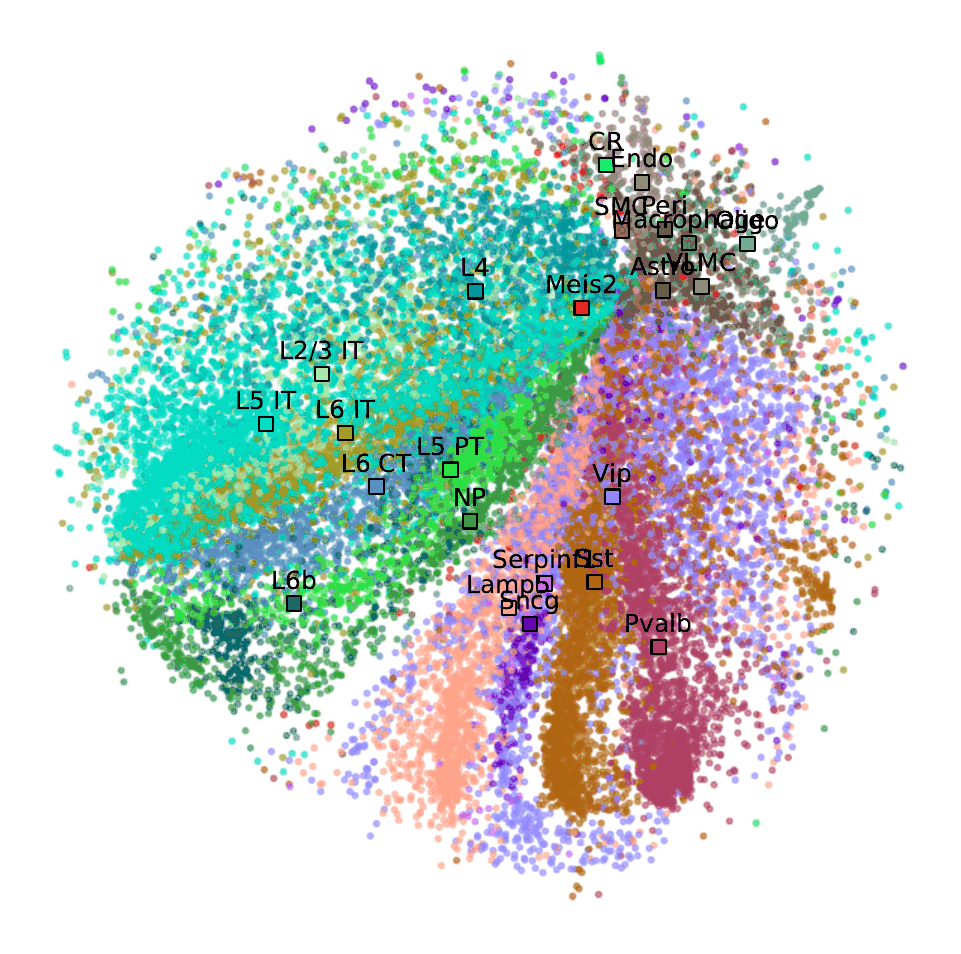
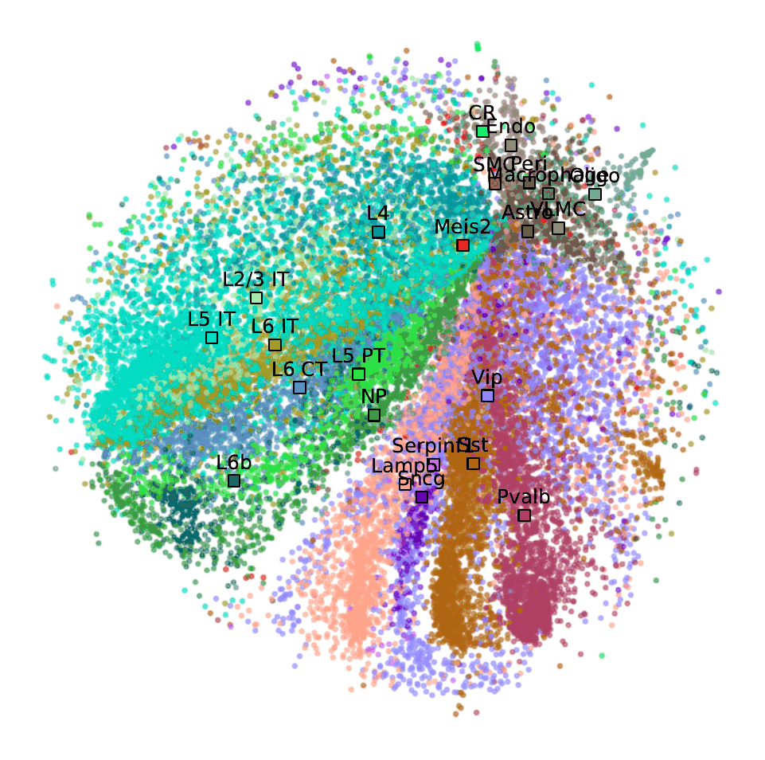

Weighted t-SNE
Read the scientific paper: https://github.com/sbcblab/weighted_tSNE
Access data and code: https://github.com/sbcblab/weighted_tSNE
Click on the plots to open the interactive version!
Regression dataset
XOR dataset
Synthetic dataset
Liver cancer dataset
Prostate cancer dataset
Feature selection
Mouse cortex dataset
Neural network layer activation
Animations of neural network learning visualized with weighted t-SNE
 Weighted t-SNE visualization of neural network learning - XOR dataset

Weighted t-SNE animation of neural network learning - Mouse cortex dataset
Weighted t-SNE visualization of neural network learning - XOR dataset

Weighted t-SNE animation of neural network learning - Mouse cortex dataset
© Bruno Iochins Grisci. All rights reserved.